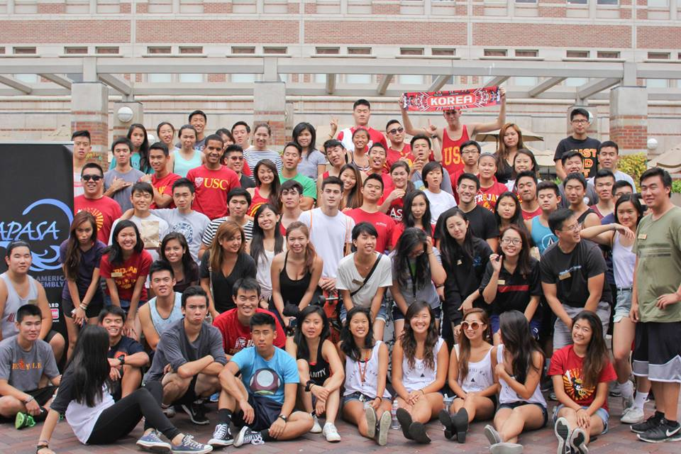
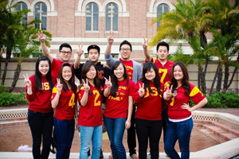
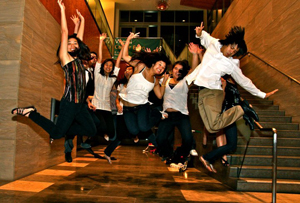

Our Assembly

The Asian Pacific American Student Assembly (APASA) is the representative voice of 21 member organizations and the undergraduate Asian Pacific American (APA) student body at large. Come meet our organizations!
Asian American Business Association (AABA)
AABA aims to present members career enhancement opportunities, provide practical business knowledge to prepare members for the business world and instill cultural awareness and international focus in the global economy. We accomplish this through general meetings, corporate tours, exclusive internship opportunities, alumni mixers and fun socials!
E-mail: uscaaba@gmail.com
Website: www.uscaaba.org
Facebook: USC Asian American Business Association
Asian American Tutorial Project (AATP)
The Asian American Tutorial Project (AATP) is comprised of over 200 tutors from USC, UCLA, and Occidental College that volunteer their time to tutor and mentor children at Castelar Elementary in Chinatown. We welcome any students interested in improving the academic and cultural awareness of Chinatown’s youth.
Website: uscaatp.weebly.com
E-mail: aatp@usc.edu
Asian Pacific American Medical Student Association (APAMSA)
USC Premed APAMSA provides students with opportunities to learn more about the medical profession, become informed about health issues prevalent amongst Asian communities, as well as meet other premedical students. Members participate in various events throughout the year, including guest speakers, medical student shadowing, volunteer opportunities, social events, and more.
Website: www.uscpremedapamsa.webs.com
Email us: uscpremedapamsa@gmail.com
Find us on Facebook: USC Premed APAMSA
Chinese American Student Association (CASA)
Now in our 16th year, USC’s Chinese American Student Association is one of the largest, most prominent organizations on campus. CASA serves as a hub for social, cultural, and community service events for Asian American students at USC. Through our bi-weekly general meetings and other amazing events, USC students can discover home away from home.
For membership information, please contact Justine Huang (jnhuang93@gmail.com).
Website: www.usccasa.com
Facebook: https://www.facebook.com/usc.casa.9?fref=ts
Facebook Fan Page: USC Chinese American Student Association
Facebook Group: USC Chinese American Student Association (CASA)
Delta Phi Kappa
Founded in 1960, Delta Phi Kappa is an Asian Interest Sorority committed to fostering sisterhood and crafting a unique blend of academic achievement, professional ambition and philanthropic dedication. Hence, we pride ourselves on the well-rounded and distinctive qualities of each of our sorority sisters. Being the one and only charter at USC, all of our sisters are held together by an extra strong bond of being in the Trojan family. Throughout the years, we have grown as individuals and together as a sorority, supporting each other’s endeavors to foster each other’s success and maintaining the strong sisterhood founded over 50 years ago! By becoming a part of our sisterhood, we hope to enhance your USC college experience. To find out more about our organization and recruitment process (rush), please visit our website or Facebook page below.
Website: www.uscdeltaphikappa.com
Facebook Rush Page: http://www.facebook.com/uscdeltaphikapparush
Contact: uscdeltaphikappa@gmail.com
Gamma Epsilon Omega
Founded in 1963, Gamma Epsilon Omega is the first Asian-interest fraternity established at USC, and currently the second oldest in the nation. Gammas strive to facilitate the development of well-rounded individuals while enhancing college careers through a wide variety of social, philanthropic, academic, cultural, athletic, and leadership events.
For information, events, and contacts, check out our website.
Haneulsori
Haneulsori was established in 2009 and became an official USC student organization in the fall 2010. We are dedicated in spreading the knowledge of Korean culture and musical tradition. We are also a very social group for people passionate in 한국악 [Korean Traditional Music]. We practice weekly for various performances, including ChooSeok [Korean Thanksgiving] celebration performance, SeolNal [Lunar New Year] celebration performance, and our GRAND Annual Recital in April. We have occasional outings to awesome places around USC.
Website: http://www.uschnsr.wordpress.com/
Youtube: http://www.youtube.com/user/uschaneulsori
Twitter: http://twitter.com/uschnsr
Hawai’i Club
Aloha! The mission of the USC Hawai’i Club is to spread the aloha spirit to USC and L.A., as well as to bring together and support students from Hawai’i and those interested in the Hawaiian culture. Our goal is to strengthen the organization by hosting weekly activities, increasing active participation among members, and connecting with alumni. We also host an annual lu’au!
Contact info: uschawaiiclub@gmail.com
Website: http://www-scf.usc.edu/~hawaii/
Facebook: USC Hawaii Club
Kazan Taiko
Kazan Taiko is a performing group that explores the increasingly popular, dynamic art of ensemble Taiko drumming. Born from a blend of discipline and plain, old fun that identifies its distinct character, Kazan’s performances are infused with both traditional and modern influences of dance, music, and culture through rhythm and movement.
Website: http://usckazantaiko.wordpress.com/
E-mail: kazan.taiko@gmail.com
Facebook: USC Kazan Taiko
Youtube: Kazan Taiko
Korean Student Association (KSA)

The University of Southern California Korean Student Association exists to establish and maintain a community that promotes Korean and Korean-american awareness through academic, political, and social activities by interacting with the surrounding communities both on and off campus. We are open to all and our organization’s strength lies in professional and social networking.
Email: uscksa@gmail.com
Website: www.uscksa.com
Facebook: USC Korean Student Association
USC Nikkei Association
USC Nikkei serves as a meeting place for both Japanese American Trojans and those interested in Japanese American culture. From adventures in Little Tokyo to our annual Culture Night to activities with other universities’ Nikkei groups, we aim to bring together a community of students enthusiastic about exploring the diverse and vibrant Japanese American community. Though USC Nikkei explores Japanese American culture, we are multiethnic and come from a variety of backgrounds. We are founded on the three pillars of community, culture, and social interaction.
USC Nikkei’s website: http://www-scf.usc.edu/~nikkei/
Questions? Contact us: usc.nikkei@gmail.com
South Asian Rural Student Aid (SARSA)
South Asian Rural Student Aid is registered non-profit committed to the sponsorship of education in rural south Asia as well as service in our local Los Angeles community. Our past events include an Alternative Winter Break trip to India, Oscar-nominated documentary screenings, and a charity banquet. Our executive board looks for new additions every year, so contact us if you’re interested!
On the web: www.ruralstudentaid.org
Get in touch: sarsa@ruralstudentaid.org
Facebook: South Asian Rural Student Aid (SARSA)
Twitter: @uscsarsa
Student Coalition for Asian Pacific Empowerment (SCAPE)
The Student Coalition for Asian Pacific Empowerment, also known as SCAPE, is a student organization at the University of Southern California that advocates for the Asian Pacific American community within and outside the university. SCAPE is dedicated to educating ourselves and other USC students about Asian Pacific American issues through community involvement and advocacy.
Email: uscscape@gmail.com
Website: http://uscscape.wordpress.com/
Facebook: Student Coalition for Asian Pacific Empowerment (SCAPE)
Southern California Indo-Americans (SCIA)
Southern California Indo-Americans (SCIA) is the premier South Asian organization at the University of Southern California. Through various cultural and social events, SCIA strives to unify the South Asian population here at USC into a tight-knit unit while fostering long-lasting bonds and encouraging networking within the community.
Contact info: scia.presidents@gmail.com
Website: www.sciatrojans.com
Facebook: USC SCIA
Sigma Phi Omega
Sigma Phi Omega was founded in 1949, and is the oldest Asian-interest sorority at USC and the third oldest in the US. With nine chapters that span the nation, the sisters of Sigma Phi Omega celebrate diversity, uphold tradition, promote both professional and personal growth, and provide endless support to their sisters during and after college. Sigmas have a distinguished history of over 60 years of sisterhood, philanthropy, leadership, and academic achievement. Sigma Phi Omega supports its members in all endeavors, whether it be leadership positions in other organizations or professional success through an extensive alumni network. Sigmas hold many social and philanthropic events throughout the year that will give members the chance to interact with people from all over California. The sorority consists of young women with varying interests, who come from different ethnicities and backgrounds. Together, they form a sorority that is considered to be one of the premier organizations in Southern California.
Website: www.uscsigmas.com
Find us on Facebook: Sigma Phi Omega, Inc.
Rush Dates: 8/24, 8/27, 8/31
President: Mei Liu
meiliu@usc.edu, 626-388-7676
New Member Director: Anabelle Lin
anabelle.yiqi@gmail.com, 909-348-3370
USC Taiwanese American Organization (TAO)
Come join us on our latest adventures! TAO prides itself in building a diverse, tight-knit community as well as providing resources to support each and every member in their aspirations. Our programs include fun social events, community service, career forums, as well as a family structure in which close friendships are built. Join USC TAO, and be part of USC’s largest Taiwanese-American and multi-cultural family!
E-mail us: usctaiwaneseamericanorg@gmail.com
Find us on Facebook: USC TAO
USC Traditional Chinese Dance (TCD)
Established in 2005, USC TCDance is a non-profit organization that serves as an inspirational body to encourage further awareness for Chinese dance as well as to provide inspiration to communities everywhere. The purpose of USC TCDance is to explore, promote, and educate the public about Chinese culture and Chinese traditional and folk dance by performing at on- and off-campus events along with philanthropic events for the surrounding community.
We have a tight-knit team of approximately 25 dancers and hold auditions for new members at the beginning of each academic year. Each year we hold a grand dance showcase and drama in the Spring semester. Our team is open to any USC student interested in or passionate about dance and Chinese culture.
For more information, visit our website: http://usctcdance.wordpress.com
Email us: usctcdance@gmail.com.
Like us on Facebook: USC Traditional Chinese Dance
USC Troy Philippines (Troy Phi)
USC Troy Philippines is the Filipino-American cultural organization on the University Park Campus. Troy Philippines aims to celebrate cultural heritage, to provide public service, and to instill development for its members, all the while sharing the enriched Filipino-American culture to USC students and faculty, the community, and beyond.
Contact us at: troyphi@gmail.com
Website: http://www.troyphi.com
Instagram: @usctroyphi
Check us out on Facebook and Twitter
USC Vietnamese Student Association (VSA)
The Vietnamese Student Association (VSA) is a dynamic organization at the University of Southern California with a three-fold mission to provide a social and support network for students from all ethnicity, promote the Vietnamese and Vietnamese American culture and heritage and to actively participate in community events and give back to the local community. We are a group of unique individuals from all nationalities and backgrounds that share a common interest in the Vietnamese culture. Many of our members are first generation Vietnamese American students, looking for a social and support network where they can explore the Vietnamese culture & heritage.

Contact/e-mail: vsa@usc.edu
Website: www.uscvsa.com
Facebook: USC Vietnamese Student Association (VSA)
Zeta Phi Rho

Website: www.sczetas.com
Facebook: USC Zeta Phi Rho